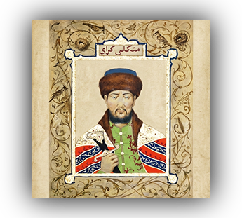

Становление Крымского ханства в середине XV века ознаменовало начало новой
исторической эпохи, когда полуостров превратился в суверенный «Юрт» под
властью династии Гиреев. Основателем государства выступил Хаджи Гирей, который
при поддержке местной знати и Великого княжества Литовского провозгласил
независимость от распадающейся Золотой Орды в 1441 году. Первоначальной
резиденцией ханов служила крепость Кырк-Ер, однако позже столица была
перенесена в Бахчисарай, ставший административным и культурным центром
региона. Формирование крымскотатарского этноса в этот период стало результатом
сложного синтеза пришлых тюркоязычных кочевников (ногаев, половцев) и
коренного оседлого населения — потомков тавров, греков, готов и аланов.
Экономика ханства постепенно трансформировалась от кочевого скотоводства к
оседлому земледелию, садоводству и активной посреднической торговле. В
Бахчисарае и других городах процветали ремесла, включая выделку кожи
(сафьяна), производство оружия и ювелирных изделий. Значительную часть доходов
казны составляли военная добыча и работорговля, центром которой был
невольничий рынок в Каффе. В то же время на полуострове развивалась уникальная
культура, синтезировавшая сельджукские, османские и местные византийские
традиции, что нашло отражение в архитектуре мечетей, фонтанов и ханского
дворца.
Отношения Крымского ханства с Московским государством прошли путь от
временного союза против Большой Орды до многовекового ожесточенного
противостояния. Если в конце XV века Менгли Гирей выступал союзником Ивана
III, то с начала XVI века набеги татар на русские и польско-литовские земли
стали регулярными, что привело к созданию «засечных черт» и росту казачества
как силы сопротивления. Изнурительные войны XVII–XVIII веков, включая Крымские
походы Голицына и взятие Бахчисарая Минихом, постепенно ослабили ханство и
подготовили почву для его падения
Закат эпохи Крымского ханства наступил в XVIII веке в результате серии
русско-турецких войн, завершившихся потерей Турцией контроля над полуостровом.
Согласно Кючук-Кайнарджийскому миру 1774 года, Крым был объявлен независимым,
что привело к острой внутренней борьбе между пророссийской и протурецкой
партиями. Последний хан Шагин Гирей пытался провести радикальные европейские
реформы, но столкнулся с мятежами и был вынужден отречься от престола. 8
апреля 1783 года императрица Екатерина II издала Манифест о присоединении
Крыма к России, что положило конец существованию ханства и включило его народы
в состав Российской империи.

Крепость Каффа

Менгли-Гирей